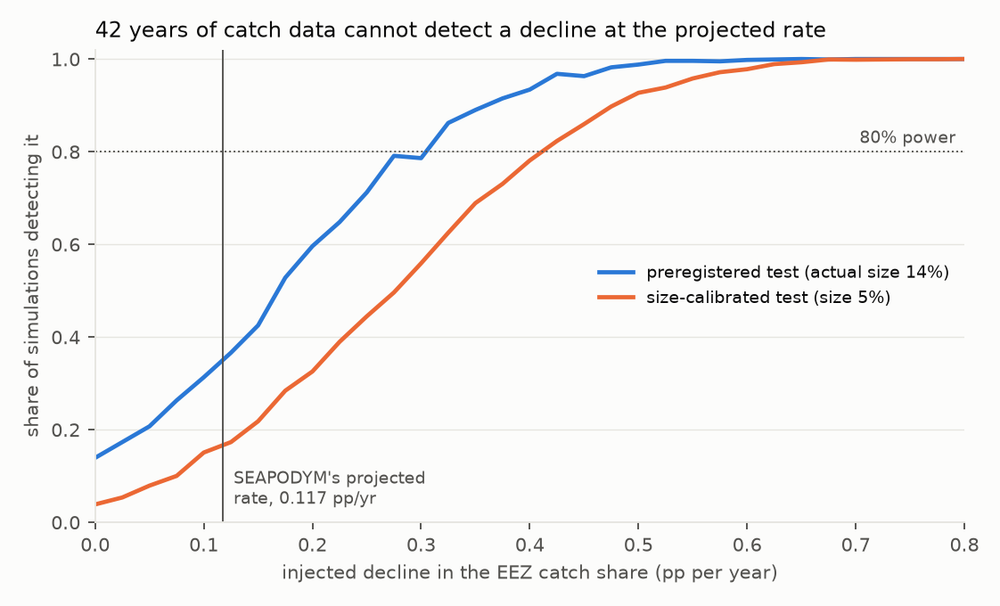
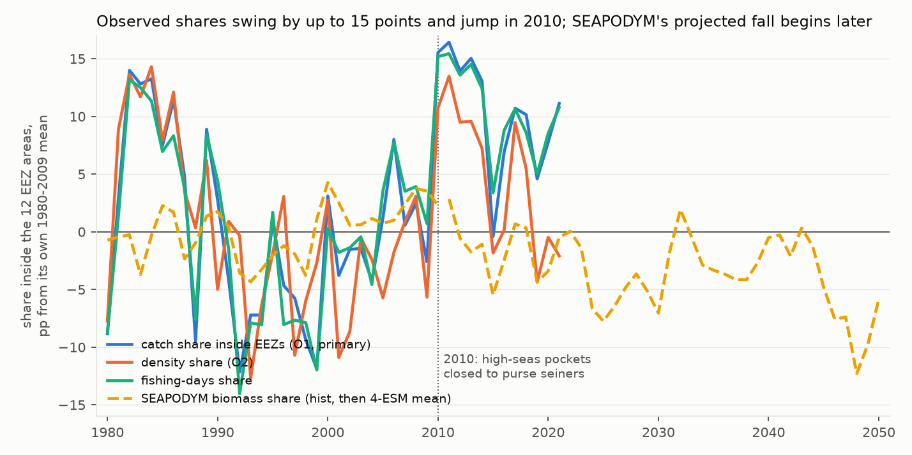
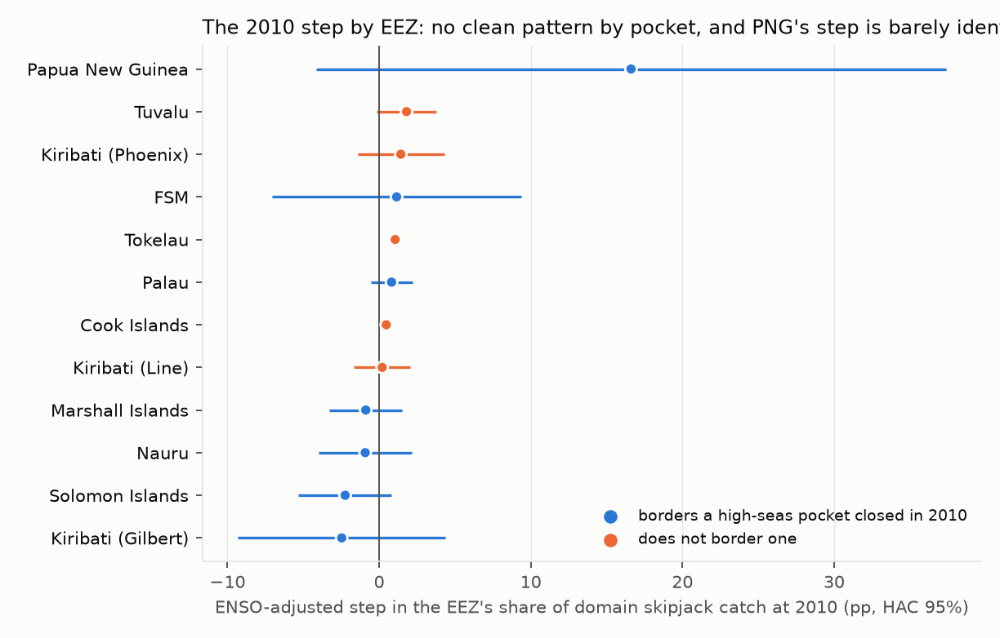
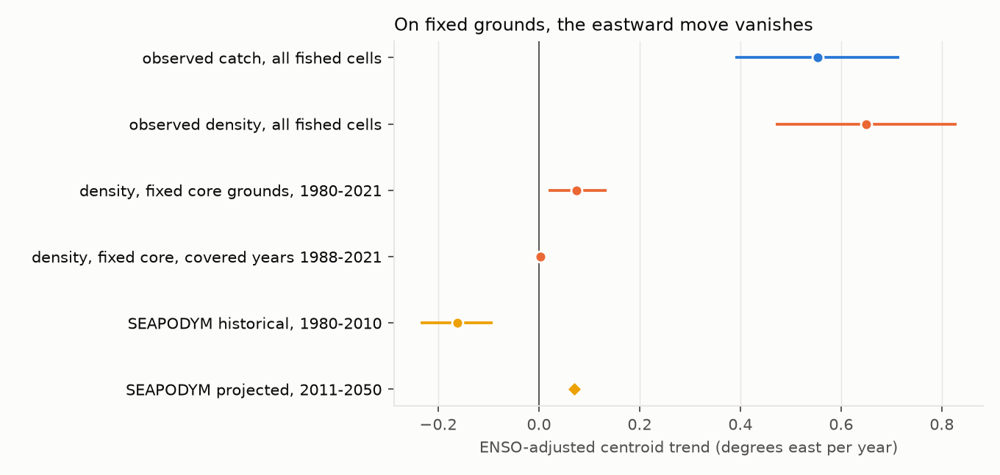

Verdict: Supported. By the preregistered rule, the share of tropical skipjack catch taken inside the ten Pacific SIDS' EEZs has not declined at SEAPODYM's projected rate: it rose, by +0.255 percentage points a year (95% interval −0.026 to +0.537), against a projected −0.117. That verdict does not contradict SEAPODYM — the model's own historical run rises too, and its decline begins later. What the study shows is that catch records cannot settle the question: they would detect a decline of the projected size about one time in six, and not reliably before the 2090s, because the share is moved far more by fishing rules and the fleet's expansion than by the fish.
In plain terms
A widely cited projection says that by 2050, climate change will push about 13% of the region's tuna out of the waters of ten Pacific Island countries and into the high seas, costing them access fees. We asked whether that shift can already be seen in the fishing record.
We used 42 years of public catch data for skipjack, the main purse-seine target. The share caught inside the islands' waters has not fallen; it has risen. That sounds like evidence against the projection, but it is not: the computer model behind the projection says the same thing for the past, and only starts the decline in the future.
The more useful finding is about what the catch record can and cannot tell anyone. Year to year the share swings by up to 15 points. Against that noise, a decline of the projected size would be detected only about one time in six, and not reliably until near the end of the century — long after 2050.
The share does move, but mostly for reasons that have nothing to do with where the fish are. It jumped in 2010, the year the high seas between several island countries were closed to these vessels. And the fleet's centre of activity has moved steadily east — but when we looked only at fishing grounds worked throughout the whole period, the fish had not moved east at all. The fleet had simply spread into new water.
So watching where tuna are caught will not confirm or refute the projection on any timescale that matters for decisions. That needs evidence that does not depend on where boats choose, or are allowed, to fish.
What was asked
Bell et al. (2021, Nature Sustainability 4:900–910) project that under RCP 8.5 the combined biomass of skipjack, yellowfin and bigeye in the EEZs of ten Pacific SIDS falls by an average of 13% (range −5% to −20%) by 2050, as tuna move east. The figure is now load-bearing in WCPFC, Forum Fisheries Agency and climate-finance arguments. SEAPODYM's developers validate its fit to catch, length and tagging data; nobody had tested whether the projected redistribution is visible in the record, or how much power the record has to see it.
What was already known
| Work | What it establishes | What it leaves open |
|---|---|---|
| Bell et al. (2021) | The projection under test | Whether the redistribution is detectable in observations |
| SEAPODYM validation (WCPFC-SC21-2025/SA-IP-20 §6.2; SC22-2026) | Out-of-sample fit to catch, length and tagging | Fit to the redistribution trend |
| Lehodey et al. (1997, Nature) | Skipjack track the warm-pool edge with ENSO | Long-term change once ENSO is removed |
| Hanich et al. (2018) / McDermott et al. (2019), PNAS | ENSO dominates effort redistribution; ENSO control is the crux | — |
| Dutta (2025), Asia & the Pacific Policy Studies | Management moves catch across EEZ boundaries | — |
The calibration critic for this scouting round confirmed no detection-or-power test of the SEAPODYM redistribution trend exists.
How it was done
Data, all open. WCPFC public-domain purse-seine catch and effort, 1°×1° monthly (SPC THREDDS mirror, 1967–2021; 1980–2021 complete). SEAPODYM 2° reference runs from SPC: a historical run forced by ocean reanalysis (1980–2010) and four RCP 8.5 projections forced by Earth system models (GFDL, IPSL, MIROC, MPI; 2011–2099), with no fishing. Marine Regions EEZ boundaries for the twelve EEZ areas of the ten SIDS (the eight Parties to the Nauru Agreement, Tokelau and the Cook Islands; Kiribati counts three). Niño 3.4 and ERSST v5.
The comparison. The same quantity in model and observations: the share of skipjack in a fixed domain (20°S–20°N, 120°E–228°E, the WCPFC data's extent) that lies inside the twelve EEZ areas. Observed as catch share (preregistered primary), density share (each fished cell weighted by catch per fishing day, which removes where the fleet is allowed to fish), and a free-school-only density share.
The test. An ENSO-adjusted linear trend: share on year, Niño 3.4 (current and lagged) and the warm-pool edge. Moving-block bootstrap intervals (block 4, 2000 draws), Newey–West beside each.
The threshold was not chosen by hand. It is SEAPODYM's own projected rate of change in the identical share, four-ESM mean, 2011–2050: τ = −0.1174 pp/yr (GFDL −0.074, IPSL −0.216, MIROC −0.152, MPI −0.027).
Plan, code and model-only results were committed (3cc5aff) before any observed series was computed.
What the model predicts, computed before any observation
The headline reproduces approximately. The EEZ mask matches Marine Regions' area to 0.4%. From the same files and ESMs Bell et al. used, the three-species biomass change in the twelve EEZ areas, 2044–2053 against 2009–2018, is −14.2% (four-ESM mean; −9.6% to −20.4%) against the published −13% (−5% to −20%). The mean agrees within 1–2 points; the least-negative ESM does not. This study tests the files SPC serves, not the paper's exact numbers.
The model's past and future point opposite ways. SEAPODYM's historical run has the skipjack EEZ share rising over 1980–2010: +0.105 pp/yr ENSO-adjusted (+0.033 to +0.180). The decline begins only in the ESM-forced projections. So the model does not predict the shift should already be visible, and an observed rise would agree with it. This was written into the plan (§1.3) before any observation was examined.
Results
All 1980–2021; ENSO-adjusted; 95% intervals.
The preregistered verdict: Supported
| trend (pp/yr) | bootstrap | Newey–West | vs τ = −0.117 | |
|---|---|---|---|---|
| H1, catch share (primary) | +0.255 | −0.026 to +0.537 | +0.017 to +0.494 | Supported |
Mean share 83.8%. Both intervals sit above τ, so the verdict does not depend on which is used. It holds across coordinate conventions (+0.321, +0.179), the 10°S–10°N core (+0.252), yellowfin (+0.332), bigeye (+0.194), and covariate sets (none +0.190, Niño 3.4 only +0.216).
The record cannot see a decline of the projected size


| preregistered test | size-calibrated test | |
|---|---|---|
| false-alarm rate with no decline | 0.14 (nominal 0.05) | 0.05 |
| minimum detectable decline, 80% power | 0.325 pp/yr | 0.425 pp/yr |
| power to detect τ | 0.37 | 0.17 |
| first year a decline at τ from 2011 is detectable at 80% | 2084 | 2098 |
The catch share's ENSO-adjusted residuals have a standard deviation of 7.9 points and lag-1 autocorrelation 0.56 — six times noisier than SEAPODYM's biomass share (1.3 points). The preregistered one-sided test fires 14% of the time when nothing is there, because three Newey–West lags undercorrect that autocorrelation, so its power figures are optimistic. The calibrated test takes its critical value from the no-decline simulations; its numbers are the honest pair (D5). Either way, catch-share monitoring could not confirm a 2050 projection until decades after 2050.
What moves the share is not the fish


The share does not trend smoothly. It was high in the early 1980s, dipped through the 1990s, and jumped in 2010 (F1). Adding a single step at 2010 — the year WCPFC closed the high-seas pockets between several EEZs to purse seiners — gives a step of +17.0 points (Newey–West +8.5 to +25.6) and turns the trend to −0.242 pp/yr (−0.538 to +0.054, Inconclusive against τ). Before 2010, the trend is −0.103 (−0.472 to +0.263).
At the same moment the EEZ share of fishing days jumped from 81.8% to 92.4% and catch share from 80.9% to 91.3%, while the density share — which ignores how much fishing each cell received — moved far less, 78.8% to 83.5%. Over the whole period the density share is flat: +0.011 pp/yr (−0.247 to +0.254).
What the per-EEZ pattern does not show (D5, D6): I predicted, before computing it, that the 2010 jump would sit in the seven EEZs bordering the closed pockets. It does not, cleanly. Grouped, the bordering EEZs carry more of the ENSO-adjusted step (+12.1 against +5.0 points), but all of it is Papua New Guinea, whose interval spans about −4 to +37 points; four of the seven bordering EEZs have negative steps. With only twelve post-2010 years, step and trend trade off per EEZ and the decomposition is poorly identified (F3).

So the 2010 step coincides with the closure and with a jump in fishing effort inside the EEZs — and that is all this study can say about its cause.SEAPODYM's historical run does not reproduce what was observed
| 1980–2010 | observed | SEAPODYM historical | difference |
|---|---|---|---|
| H2, catch share | −0.103 | +0.105 | −0.208 (−0.793 to +0.240), consistent |
| density share | −0.293 | +0.105 | −0.398 (−0.889 to −0.045) |
| free-school density share | −0.002 | +0.105 | −0.107 (−0.807 to +0.463) |
| centroid, degrees east/yr | — | −0.163 (−0.234 to −0.092) | — |
On the catch share the two are consistent, but the interval is too wide to mean much. On the density share — the closest observed analogue to biomass — they are not: the model's rise is contradicted by an observed decline. Out of sample (H3, train 1980–1999, test 2000–2010), neither SEAPODYM nor the ENSO regression has skill: R² is −0.46 and −1.72 respectively, both worse than predicting the test-period mean. SEAPODYM "wins" (ΔR² = +1.26, interval −0.85 to +2.92) only because the ENSO regression fails worse, so by the preregistered rule H3 is not supported.
The eastward move is the fishery, not the fish
The catch centroid has moved east at +0.554° a year (+0.390 to +0.715) and the density centroid at +0.650 — the direction SEAPODYM projects, eight times its projected rate of +0.070. Catch shifted from western EEZs (Papua New Guinea −8.9 points, FSM −10.9) to central and eastern ones (Kiribati Gilbert +11.4, Nauru +4.9, Tuvalu +4.2, Kiribati Phoenix +3.1). Because that move stayed largely inside the ten SIDS' waters, the pooled share could not register it.
But the purse-seine fishery itself expanded east over these decades, and a centroid computed over the cells fished each year moves east whenever new grounds open. Restricted to the 86 cells fished in at least 80% of years (141.5–159.5°E), the trend falls to +0.075; restricted further to the 31 years in which those cells were actually fished (1988–2021), it is +0.002° a year (−0.009 to +0.013) (F4; D6, D7). Within grounds worked throughout, skipjack density has not shifted east at all.


What this does and does not show
It does not show the projection is wrong. The verdict is Supported, but SEAPODYM predicts what was observed for the past. The study shows the projection is untested by the catch record and will stay so.
It does show the model's historical dynamics disagree with observation on density — the one observed series built to track fish rather than fleets. A model whose historical redistribution points the wrong way on that series deserves less confidence in its projected redistribution than its fit statistics suggest.
Catch is not biomass. SEAPODYM's runs are no-fishing biomass; the observations are catch from a managed, expanding fishery. Everything is framed on shares and trends, never levels.
Public-domain suppression is unmeasurable here (D4). The preregistered check looked for catch recorded without effort; in this file a suppressed cell loses every variable at once (identical missing-value pattern across all 26 variables in every cell-month), so it is indistinguishable from an unfished cell. The size of the problem is unknown, not small.
The domain stops at 228°E. Biomass that leaves eastward leaves the denominator too, so this share is not the 13% figure and must not be read as one.
The open data end in 2021, and SEAPODYM's historical run in 2010. A newer WCPFC release would add years but not change the power arithmetic much: at 80% power the detection year is decades away.
Several analyses are post hoc (D5–D7): the per-EEZ test, the size-calibrated power, the centroid and its fixed-footprint check. Each was logged with its decision rule before it ran, and two of them went against my expectation.
Data-integrity findings worth reporting to SPC
The four bigeye projection files labelled bet_Btot_* name their variable bet_B_young but hold total
biomass (identical to adult + young). The bigeye historical bet_Btot is a different quantity, 0.848 × (adult
+ young), varying 0.73–1.00 by cell, so splicing it to the projections puts a definitional step at 2010/2011
inside the 2009–2018 baseline Bell et al. used. Skipjack and yellowfin are consistent (D2).
Reproducing it
code/model_targets.py EEZ mask, Bell reproduction, SEAPODYM share trajectories (model only)
code/indices.py Nino 3.4 anomaly and warm-pool edge
code/observed.py observed annual shares, three coordinate conventions
code/analysis.py estimators and decision rules
code/test_analysis.py 14 checks on synthetic data
code/primary.py H1-H4 and preregistered sensitivities -> primary.json
code/exploratory.py per-EEZ, size-calibrated power, centroid (post hoc, D5)
code/footprint.py fixed-footprint check (post hoc, D6-D7)
code/figures.py F1-F4
Raw data are public at the URLs in plan.md §3 and are not redistributed. Seeds are fixed (20261016).